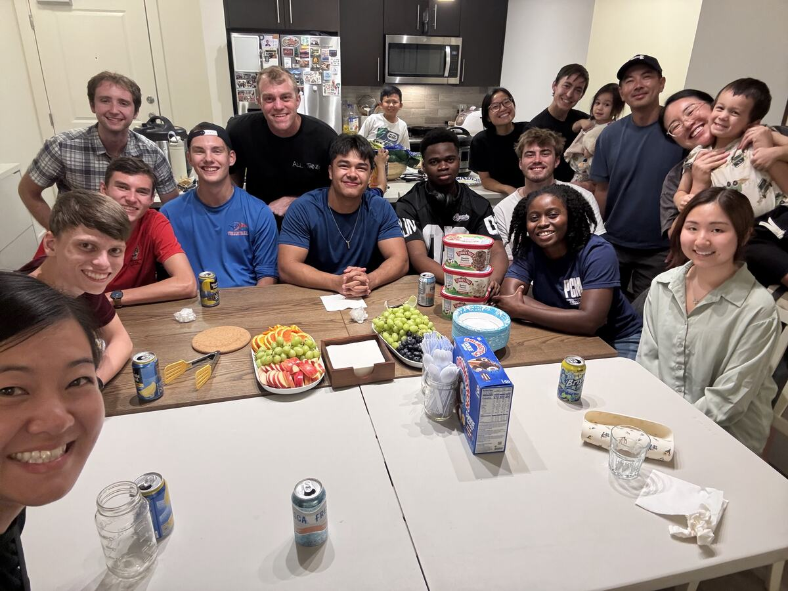
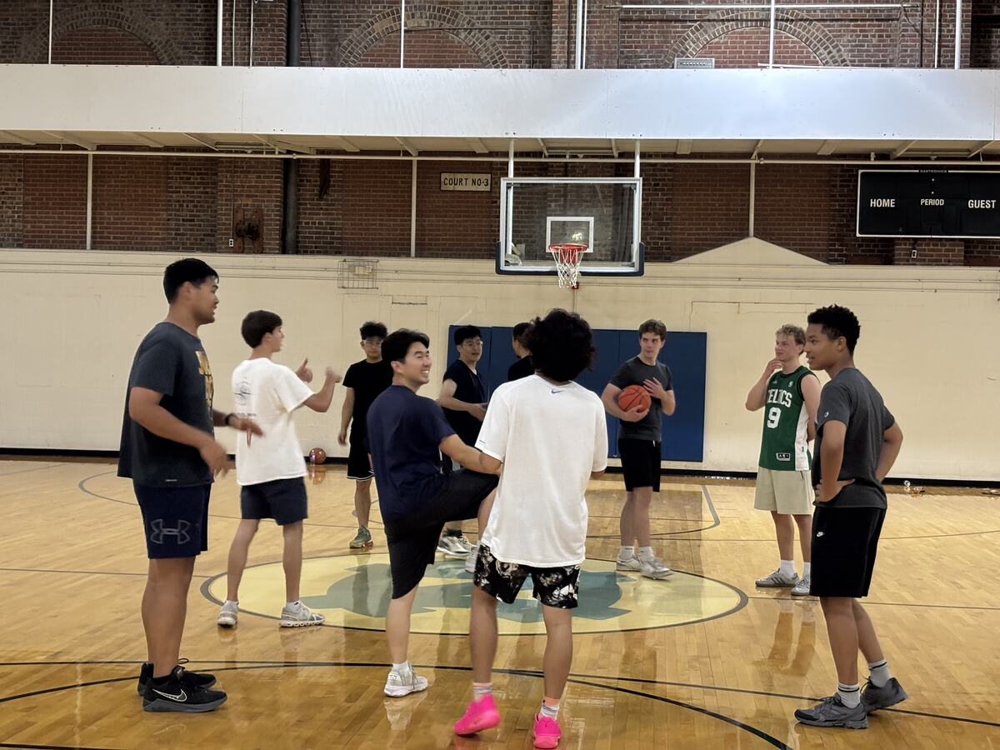
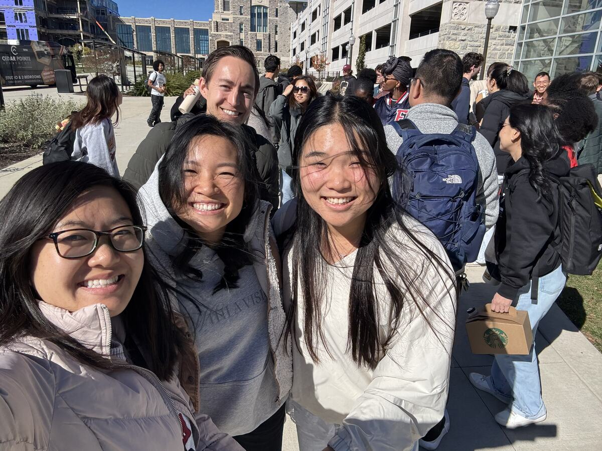
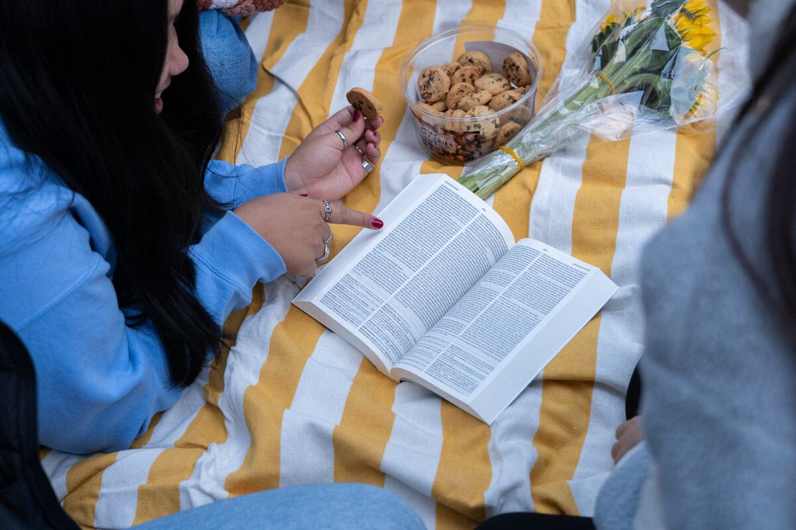
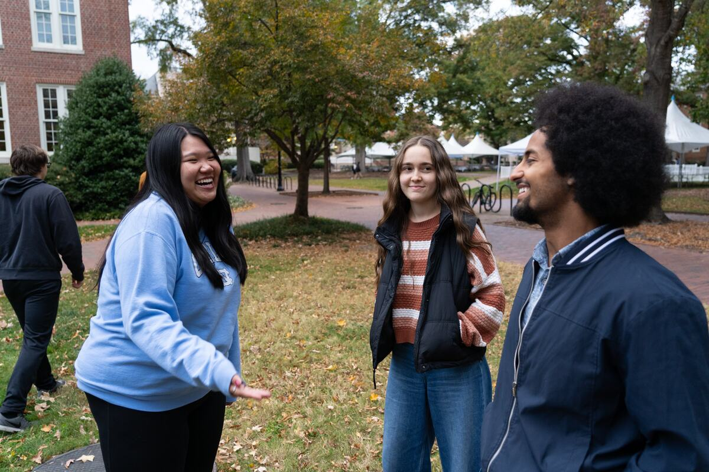
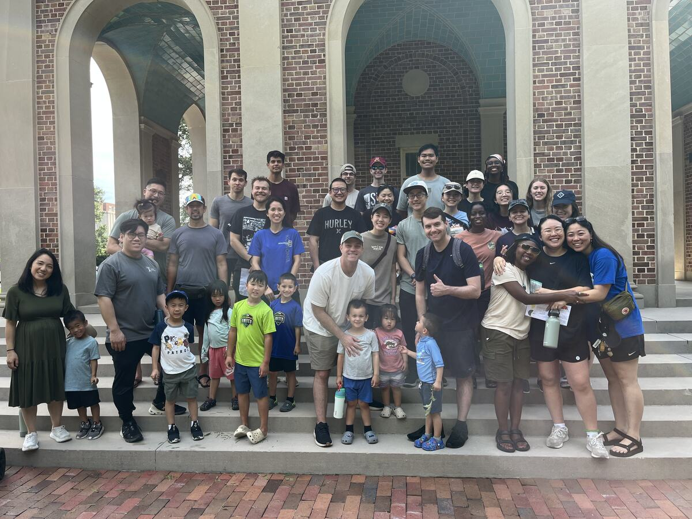
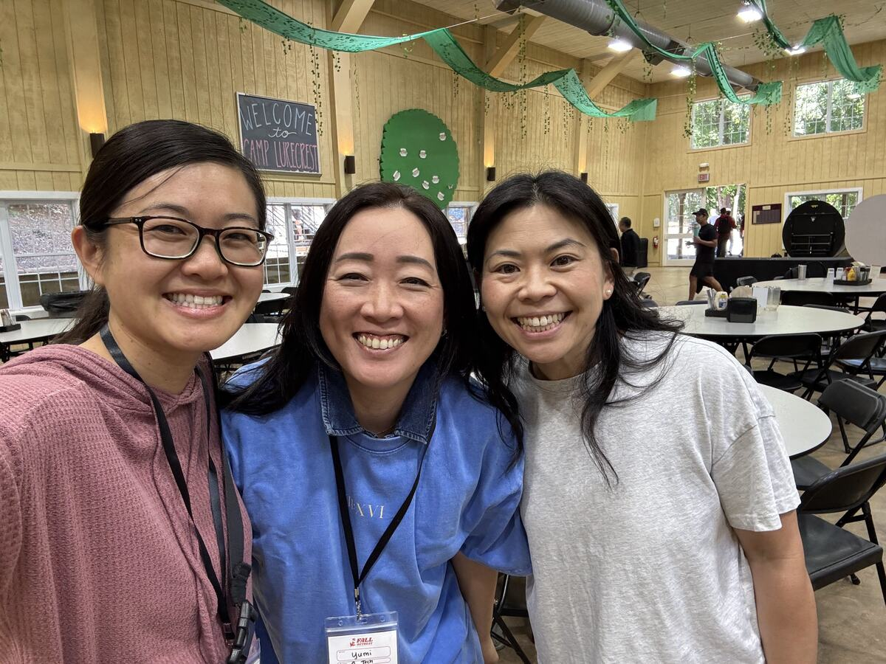
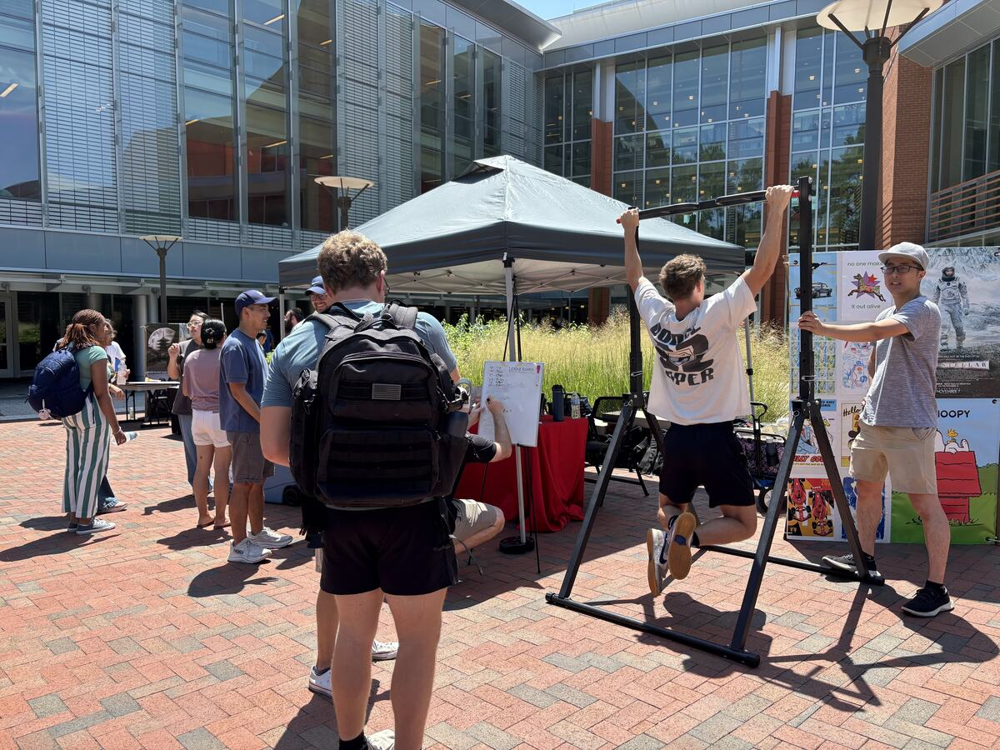

MENAHhere for the food
Dinner and the Bible, every week. Stay for the conversation.
A place at UNC and NC State to find out who Jesus is, study the Bible for yourself, and grow as one of his followers. Tap through our story
Bible teaching, prayer, and time to connect, rooted in Scripture and real college questions.
Wolfpack? NC State runs Bible studies and good food through the week. See how to plug in →
Real clips from this semester. Double-tap to like.
Still asking questions or already following him, this is a place to dig into the Bible and grow. Drag the cards, or use the buttons.
Tell us a bit about you and where you are with faith, and someone will reach out.
Get connected
MENAHDinner and the Bible, every week. Stay for the conversation.

MENAHDinner, Bible, then basketball. Everyone's welcome.

MENAHFind friends who'll help you keep following Jesus in college.

MENAHMake your faith your own. Learn to study the Bible for yourself.

MENAHSeeking answers about God and the Bible? Dig in with us.
Bible studies, dinners, game nights, road trips and late-night talks about faith.
Follow @a2f_unc and @a2fncsu for the latest.

SUNweekly11:30am – 1:30pm at 211 W Cameron. Food provided.
Pull up →
29–31Jan 2027Southeast Winter Retreat at Liberty University. Early-bird pricing.
Sign up →
6:30pmA common question about God and Christianity, answered in front of Fox Science Labs.
See post →Tap a question. Still wondering? Fill out our form and someone will reach out.
every Sunday
11:30 am
211 W Cameron Ave, Chapel Hill
this week at NC State
Bible studies + food
Times and rooms are posted on @a2fncsu.